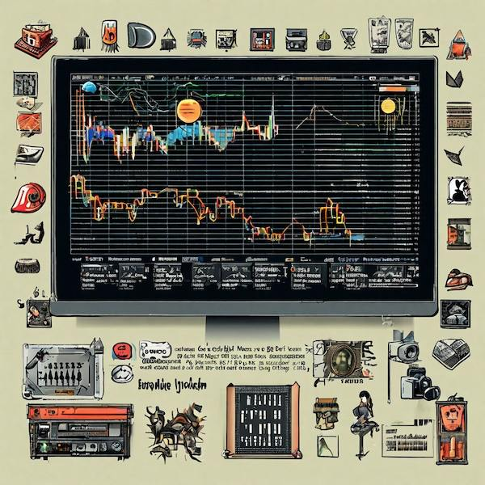

Posts with tag "infrastructure"
Мониторинг проектов в Yandex Cloud
posted on 2025-02-16

В последнее время я стараюсь максимально стандартизировать инфраструктуру своих проектов. Особенно это касается трех вещей:
- деплоя
- мониторинга
- логов
В части деплоя для пет-прожектов решил максимально все упростить - компилирую бинарник и запускаю под systemd. Скрипт сборки написан на Lisp и шарится между проектами. Если интересны подробности, пишите в комментах, сделаю про это отдельный пост.
Сейчас же хочу немного рассказать про мониторинг.
Для мониторинга каждый проект имеет "ручку" /metrics, которая умеет отдавать данные в формате Prometheus. Раньше у меня была своя инсталляция Grafana, которая умеет забирать данные, но с недавних пор я решил что лучше буду использовать Yandex Cloud и его сервис Мониторинг. У Яндекса есть свой демон, которому в конфиге можно указать с каких урлов собирать метрики. Выглядит конфиг сервиса примерно так:
routes:
- input:
plugin: metrics_pull
config:
namespace: my-project
url: http://localhost:10114/metrics
# Даже без app метрик, с одного lisp процесса получается 70 метрик,
# чтобы было дешевле, шлём их только раз в минуту.
poll_period: 60s
format:
prometheus: {}
channel:
channel_ref:
name: cloud_monitoring
Кладёшь его в файлик типа /etc/yandex/unified_agent/conf.d/my-project.yml и дальше демон unified-agent сам собирает метрики и отправляет их в облако. Естественно, генерацию таких конфигов я тоже собираюсь автоматизировать.
Интерфейс облачного Мониторинга достаточно интуитивен. Там можно собрать дашборд сервиса и, что самое важное, сконфигурировать алерты - и когда с сервисом происходит что-то нехорошее, прилетит уведомление на почту или в Telegram.
Для сбора метрик внутри процессов использую библиотеку prometheus.cl и несколько своих дополнений:
- clack-prometheus – позволяет сконфигурировать /metrics эндпоинт
- reblocks-prometheus – делает примерно то же самое для проектов использующих фреймворк Reblocks + экспортирует пару метрик, показывающих сколько сессий сервер держит в памяти и сколько страниц в этих сессиях.
- https://github.com/40ants/prometheus-gc – собирает информацию о том сколько памяти в каком поколении garbage collector у SBCL
Системный подход к сбору метрик позволяет предоставлять надёжные сервисы клиентам. На мой взгляд это очень важно.
Пишите в комментах, если интересно узнать про подход к сбору логов или деплою сервисов.
Обсудить пост в Telegram канале.This blog covers learning, ai, automation, voice, holism, ideas, zerocoder, python, projects, closed, commonlisp, tips, seo, telegram, bot, прототип, smarthome, yandexcloud, logging, software, thoughts, salebot, bots, notes, emacs, lisp, codeassistant, infrastructure, news, lispworks, mcp, hackathon, sql, yandex, cloud
Created with passion by 40Ants